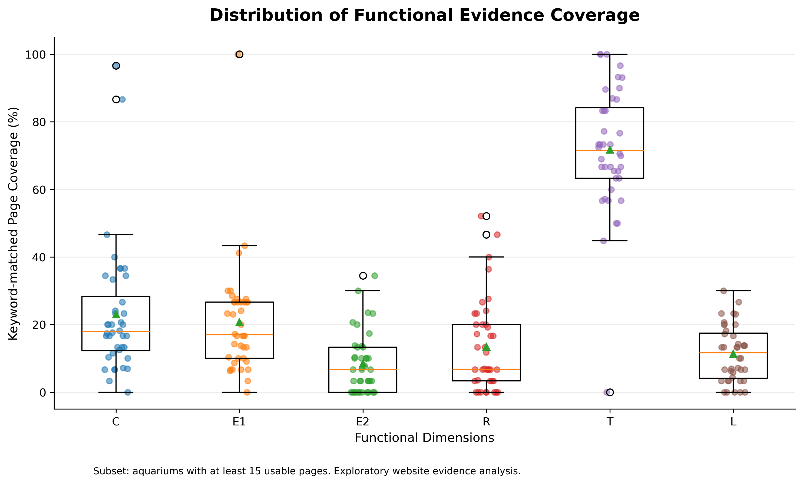
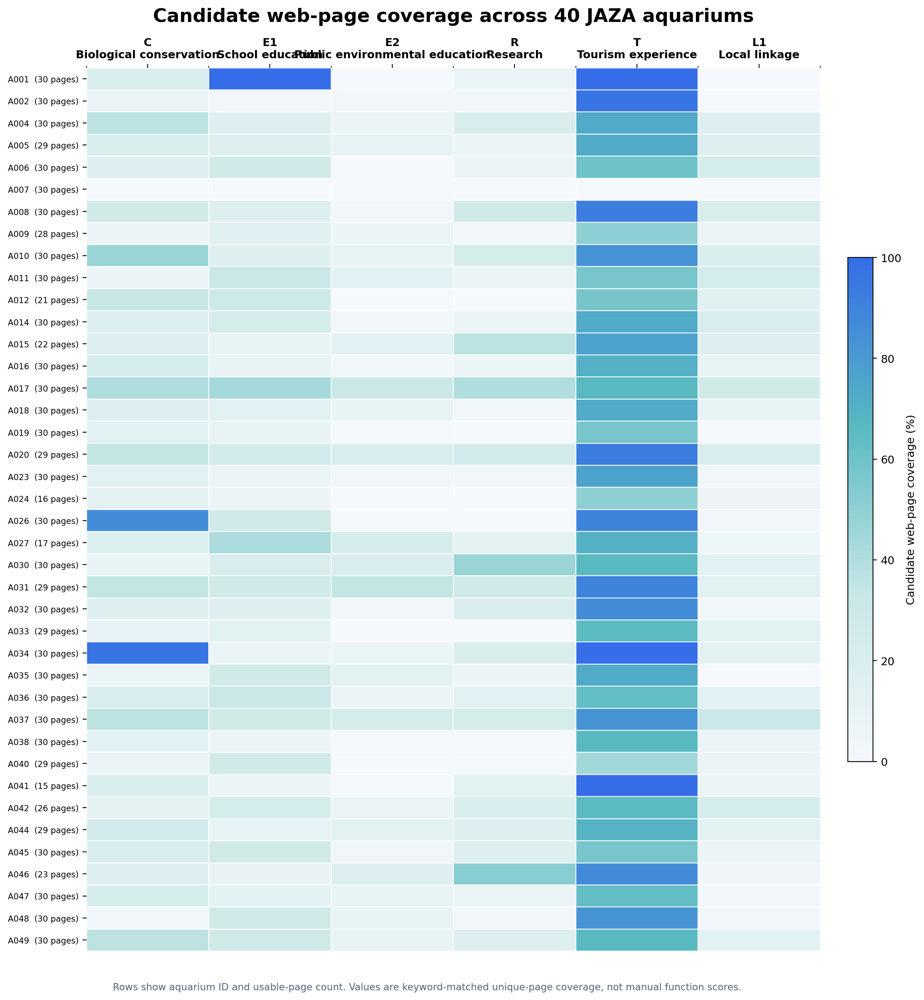
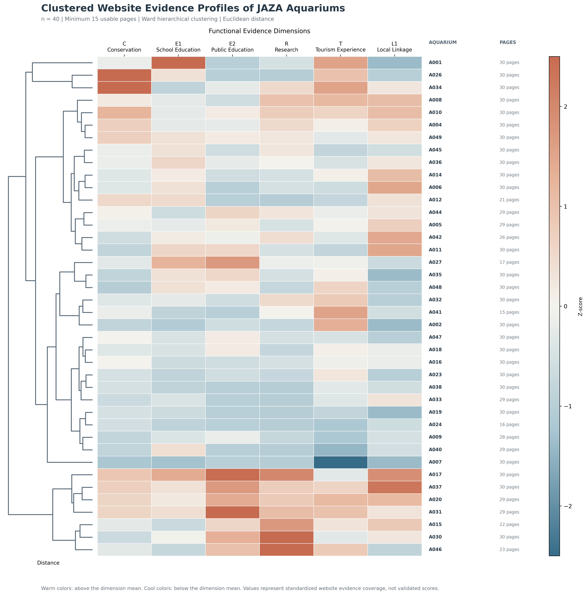
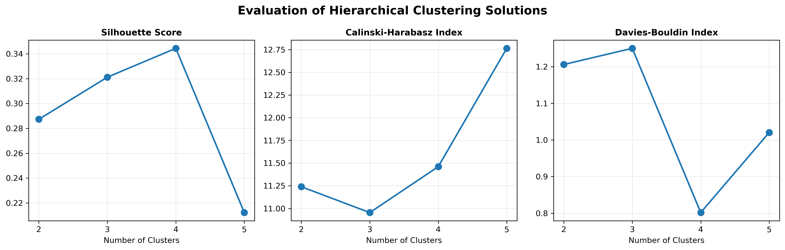
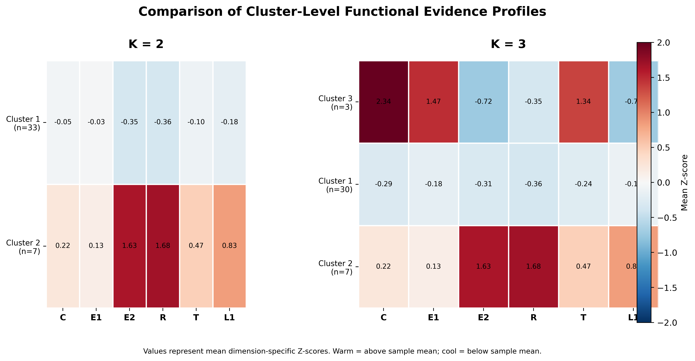
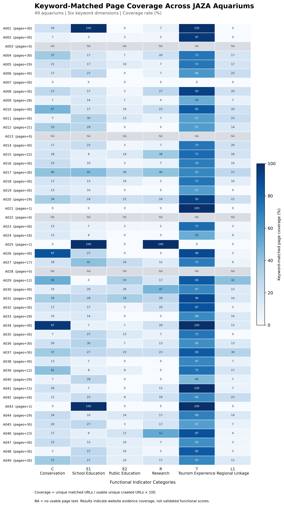
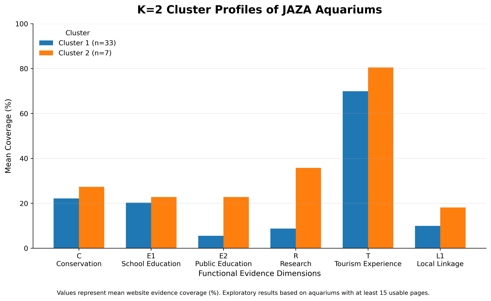

说明水族馆具有多样、复杂的功能与空间组织。
UNDERGRADUATE THESIS PROPOSAL
日本水族馆官方网站
功能呈现及其组合特征
基于 49 家水族馆官网公开信息的内容分析
从可持续旅游吸引物视角理解多维功能的呈现方式。
本科毕业论文开题官网公开证据49 家拟定样本
01 / 问题意识
不只问“有什么”，而是看如何组合。
单独列举设施与活动，难以解释不同水族馆如何呈现旅游、教育、保护、研究与地域关联等多重价值。
研究转向
从单项功能的有无，转向官网公开功能的构成与组合。
观察对象是官网上的可追溯公开证据，而非对机构真实运营绩效的直接判断。
02 / 文献缺口
已有研究谈功能，
但较少比较官网如何呈现功能组合。
讨论水族馆的公共教育、保育与社会角色。
将官网作为公开价值表达的材料，比较多家水族馆的功能构成与组合。
03 / 研究问题
官网如何呈现多维功能，
又形成了怎样的组合？
日本 49 家水族馆官方网站如何呈现多维功能，这些功能呈现具有怎样的构成与组合特征？
如何将 JAZA 与 GSTC 转化为可识别的官网证据？
不同个案的呈现程度与组合类型有何差异？
这些组合对可持续旅游吸引物有何启示？
04 / 理论与分析框架
三个层次，避免混为一谈。
提供观光学解释视角：水族馆如何呈现多元价值。
→
提供行业使命、功能与可持续实践的参照来源。
→
研究者基于文献与标准整理的官网内容分析框架。
六维度与两套体系之间的逐项映射仍待补充论证；本展示不将其表述为官方既定维度。
05 / 六维度工作定义
以可观察证据描述功能，
不以代码替代研究含义。
C保护保全、繁育、救护等
E1学校教育面向学校的课程或项目
E2公众环境教育生态解说与公众学习
R科研调查、研究或合作
T旅游体验参观、互动与游憩体验
L1地域关联在地生态、文化或协作
以上为现有项目中的工作定义；正式论文前仍需完成来源条目、证据边界与评分规则的逐项确认。
06 / 研究对象与材料
每一项判断，都要回到可追溯的网页证据。
正式名称、所在地、运营主体与官网域名。
样本边界页面文本、URL、页面标题与采集记录。
观察材料证据摘录、截图、人工判断与决策日志。
可追溯依据正式采集前需锁定：纳入与排除标准、时间截点、多语言页面处理、改版与失效页面的规则。
07 / 研究进度与数据收集
截至目前的阶段性成果
研究进度：从理论框架到官方网站数据收集
有有效网页文本的水族馆45 / 49
达到暂定 15 页标准的水族馆40 / 49
另有 9 家未达到暂定 15 页标准，4 家未获得有效网页文本。15 页仅为探索性分析的初步筛选标准，不是最终样本纳入标准。
08 / 数据收集流程
截至目前的阶段性成果
从样本清单到人工核验，
每一步都保留可追溯路径。
点击任一步骤，可展开查看该环节的工作说明。
01JAZA 样本清单
建立 49 家初步样本主表，记录名称、所在地与官网线索。
02官方网站识别
确认官网域名与可抓取的公开页面入口。
03网页资料抓取
保留页面文本、标题、URL 与采集记录；原始记录为 1,161 条。
04清洗与去重
处理有效文本并按标准化 URL 去重，形成 1,149 条有效网页。
05有效网页数据库
建立可追溯的网页语料与覆盖情况，45 家至少有 1 条有效网页。
06候选证据提取
以关键词定位候选摘录，供后续人工判断，不作功能确认。
07人工核验
依据统一编码手册判断证据边界与功能归属；全样本尚未完成正式编码。
流程中“关键词候选”只解决检索效率问题；是否构成功能证据，须回到网页上下文并经人工核验。
09 / 候选证据与人工核验
截至目前的阶段性成果
自动化负责发现，
功能判定仍由人工完成。
候选证据数据库
关键词匹配 ≠ 功能确认
自动匹配的用途是定位可能相关的网页片段，而不是证明水族馆已具备对应功能。
1,734自动提取候选证据
911不同标准化网页 URL
PENDING候选证据状态
全部候选记录尚待人工核验，不作为正式全样本编码结果。
人工复核案例
鴨川シーワールド
29有效网页
143自动候选摘录
17人工排除误匹配
“救護室”游客急救室，不是野生动物救护。
“食物过敏调查”游客饮食调查，不是科学研究。
“学校团体票价”票务信息，不等于学校教育活动。
“黑潮”餐厅名称餐饮命名，不等于地域生态展示。
结论：自动化工具提高检索效率；最终功能判定必须由研究者依据统一编码手册进行人工核验。
10 / 初步预编码与人工证据核验
截至目前的阶段性成果
初步预编码：从官方网站证据到功能评分
C生物保育
E1学校教育
E2公众环境教育
R调查研究
T观光体验
L1地域关联
| 水族馆 | C | E1 | E2 | R | T | L1 | 当前编码状态 |
|---|---|---|---|---|---|---|---|
| AOAO SAPPORO | 2 | 2 | 2 | 1 | 2 | 1 | 探索性预编码 |
| 鴨川シーワールド | 2 | 2 | 2 | 2 | 2 | 2 | 六维度均已确认 |
| 森の中の水族館 | 1 | 0 | 2 | 0 | 2 | 2 | 六维度均已确认 |
| 桂浜水族館 | 0 | 2 | 2 | 0 | 2 | 1 | 仅 C、R 已确认；其余暂定 |
| 虹の森公園おさかな館 | 1 | 2 | 2 | 0 | 2 | 2 | 初步确认，待手册定稿 |
当前探索性评分采用 0—1—2 三级。本表为五家个案的初步探索性评分与复核状态，不是最终正式编码结果，也不是全样本研究结果。
11 / 功能画像与人工判断
截至目前的阶段性成果
点击个案名称，查看六维度的初步功能画像。
预编码个案选择
研究者的人工判断，不是关键词打分
- 是否为真实官方网站
- 是否符合功能定义
- 是否存在语义误匹配
- 是否有具体活动或项目
- 是否可追溯具体证据
六维度评分画像 · 0—1—2
AOAO SAPPORO
研究者认可的探索性预编码
C 2 · E1 2 · E2 2 · R 1 · T 2 · L1 1
210
刻度：0 = 本次公开资料未检出直接证据；1 = 有限/一般证据；2 = 直接、具体证据。
五家个案已跑通“官网页面—候选证据—人工判断—初步评分”的研究流程；正式全样本编码仍须在编码手册定稿后推进。
12 / 编码与试编码
关键词用于定位，
人工证据判断才用于编码。
每条记录保留页面标题、URL、访问日期、证据原文或截图、对应维度、评分理由及疑难说明。
0在规定范围内未找到足以支持编码的证据
1存在有限或一般性公开证据
2存在直接、具体的功能公开证据
现有资料基础
样本主表、网页语料、证据档案与人工复核记录已经保留。
49样本清单
6工作维度
0–2候选评分等级
评分细则仍属开题阶段方案，须通过试编码与规则修订后定稿。
13 / 初步数据分析
截至目前的阶段性成果
分析的是候选网页覆盖率，
不是最终人工编码评分。
分析数据与计算
Coverage(i,j) =
水族馆 i 在维度 j 匹配到的不同网页数量 ÷ 水族馆 i 的有效网页总数 × 100%
水族馆 i 在维度 j 匹配到的不同网页数量 ÷ 水族馆 i 的有效网页总数 × 100%
40仅纳入达到暂定 15 页标准的水族馆。
6使用 C、E1、E2、R、T、L1 六个探索性维度。
×同一网页可匹配多个维度，因此六项覆盖率不需要相加为 100%。
六维度平均候选网页覆盖率 · 点击柱体查看统计
C · 生物保育
23.1%平均值
17.9%中位数
19.4%标准差
候选页面覆盖率呈现较大个案差异；词汇命中仍须回到页面上下文进行核验。
所有统计均来自关键词匹配后的不同网页覆盖率。它描述官网候选证据的分布，不能代表水族馆真实运营绩效或实际功能水平。
14 / 覆盖率分布与探索性发现
截至目前的阶段性成果
均值之外，也要看 40 家个案的分布与离散程度。

平均 71.8%、中位数 71.5%；这是与观光体验相关的候选页面分布特征。
E1 平均 20.7%，E2 为 8.6%；关键词体系和网页表达方式都可能影响这种差异。
R 平均 13.5%，L1 为 11.4%；低覆盖率不等于现实中没有相关功能。
箱线图中的离散与离群值表明，不同官网的候选证据呈现存在差异。
箱线图使用同一份 n = 40 原始覆盖率数据：橙线为中位数，绿色三角为平均值，散点为单个水族馆。
15 / 40 家样本的候选网页覆盖率
截至目前的阶段性成果
六维候选页面覆盖在水族馆之间
呈现不同分布。

每行以水族馆编号与有效网页数标识；每格是该维度关键词命中的不同网页占有效网页的比例。图中不是人工确认的功能得分。
16 / 标准化分析模块
截至目前的阶段性成果
原始覆盖率差异很大时，
用 Z-score 比较相对位置。
标准化公式
Z = (X − 平均值) / 标准差
它将各维度转换为“相对该维度样本平均水平的位置”，避免 T 等原始覆盖率较高的维度在比较中天然占优势。
0等于样本平均水平
正数高于样本平均水平
负数低于样本平均水平
标准化用于探索候选证据的相对模式，不会将候选匹配转换为已确认的功能评分。

17 / 探索性聚类分析
截至目前的阶段性成果
不是给水族馆贴标签，
而是先探索功能组合是否存在模式。
本轮探索的数据与流程
对象为达到暂定 15 页标准的 40 家水族馆；输入为六维度候选网页覆盖率，而非最终人工编码。
01
六维覆盖率做 Z-score将不同原始覆盖率尺度转换为可比较的相对位置。
02
计算欧氏距离比较两家水族馆六维功能画像之间的远近。
03
Ward 层次聚类逐步合并较相近的个案，形成树状分类结构。
04
比较 2—5 类方案结合轮廓系数与每类样本数，审慎判断可解释性。
点击术语查看通俗解释
Z-score
标准化：让原本数值范围不同的维度更容易放在一起比较。
Euclidean Distance
欧氏距离：衡量两家水族馆功能画像之间相距多远。
Ward
一种逐步合并类别的方法，倾向把差异较小的个案先合并。
Hierarchical Clustering
层次聚类：从个案逐步合并到类别，形成可阅读的树状结构。
Silhouette Score
轮廓系数：综合看组内是否相近、组间是否有差异；但不能单独决定最佳方案。
树状图已呈现在上一页的标准化热力图左侧；本节用它的切分结果进一步比较不同分类数量。
聚类只是对当前关键词候选页面分布的探索，不是对水族馆可持续旅游表现或真实功能水平的定论。
18 / 聚类方案比较
截至目前的阶段性成果
轮廓系数最高，
也不等于可以直接采用。

左图为轮廓系数：数值越高，表示当前分组在“组内相近、组间差异”上的表现相对更好；其余两图为脚本同时输出的辅助指标。
2—5 类方案：轮廓系数与样本分布
2 类
0.287
3 类
0.321
4 类
0.344
5 类
0.212
2 类
337
3 类
3073
4 类
30721
5 类
1713721
条带内数字为每个类别的样本数，总计均为 40 家。
4 类方案的轮廓系数最高（0.344），但出现仅 2 家和 1 家的类别。因此不能仅凭最高分就认定它是最优或稳定的分类。
19 / K=2 与 K=3 的功能画像
截至目前的阶段性成果
先看类别间的差异，
再判断它是否构成可解释的组合。

暖色表示该类别在该维度的平均 Z 分数高于样本平均；冷色表示低于平均。图中是标准化相对位置，不是人工功能评分。
K=2：原始候选网页覆盖率均值
| 维度 | Cluster 1 33 家 | Cluster 2 7 家 |
|---|---|---|
| C | 22.1% | 27.3% |
| E1 | 20.3% | 22.8% |
| E2 | 5.5% | 22.8% |
| R | 8.7% | 35.8% |
| T | 69.9% | 80.5% |
| L1 | 10.0% | 18.1% |
K=2 中，Cluster 2 在六个维度上均高于 Cluster 1。这更可能首先反映“整体候选证据覆盖量”差异，而不一定是两种边界鲜明的功能组合。
K=3 虽增加了一个 C、E1、T 较高的小类，但该类只有 3 家，仍需谨慎解释，不能急于命名类别。
20 / 相对功能画像与下一步
截至目前的阶段性成果
剥离整体候选证据量后，
目前仍未出现稳定而清晰的分类。
相对功能画像：实际处理方式
先对每个维度做列 Z-score；再从每家水族馆六个 Z 分数中减去其自身平均值（行均值中心化）。因此聚类更关注“相对更侧重哪一维”，而非整体候选页面覆盖率高低。
| 分类数量 | 各类别样本数 | 轮廓系数 |
|---|---|---|
| 2 类 | 39、1 | 0.571 |
| 3 类 | 37、2、1 | 0.482 |
| 4 类 | 32、5、2、1 | 0.320 |
2 类轮廓系数达到 0.571，但其中一类只有 1 家。这不构成可靠的类型发现，反而提示大多数水族馆的相对功能呈现模式可能较接近。
当前可报告的结论
Ward 层次聚类的探索流程已经跑通；但尚未出现兼具区分度、样本平衡与解释力的方案。
答辩中的审慎表述
不强行给类别命名。待二级指标完善、人工正式编码完成后，使用更新数据重新分析。
计划开展：K-means 对照
预先指定类别数量，再依据水族馆间距离分组；拟作为层次聚类的对照方法。
尚未完成
项目中未确认 K-means 的实际运行结果，因此本页仅将其列为下一阶段计划，不作为已有成果。
阶段性结论：已初步完成探索性聚类，但目前不能据此给出稳定类型学。正式结论须建立在二级指标与人工编码完成之后。
21 / 从初步数据分析到研究设计优化
基于实际研究过程的反思
每一个发现的问题，
都对应一项可追溯的设计调整。
问题
为什么需要调整
正在推进的改进方案
1. 候选证据 ≠ 真实功能证据
关键词会产生语义误判，不能直接作为功能确认。
自动检索只解决“找到哪里”
仍需回到官网页面、活动语境与证据链判断实际含义。
建立人工核验与证据留存
以统一规则复核网页归属、功能定义、误匹配与可追溯证据。
2. 六维度理论层级需调整
E1 学校教育与 E2 公众环境教育都属于教育功能。
并列一级维度可能混淆层级
教育内部差异值得保留，但需要先确认其与其他一级维度的关系。
尝试以 E 作为一级维度
将 E1、E2 暂列为教育功能的二级指标，并继续论证。
3. 原有指标细化不足
宽泛一级指标难以充分区分不同水族馆的具体呈现。
相同一级维度内部可能含有不同活动
仅凭一级维度不利于形成一致、可复核的评分判断。
制定二级指标与边界
为每项补充定义、纳入/排除范围、证据要求及评分规则。
4. 聚类尚不能支持稳定命名
类别主要呈整体覆盖水平差异，且部分小类样本过少。
现阶段类型解释证据不足
候选网页覆盖率不能替代正式人工编码的功能组合数据。
完成正式编码后重新分析
以细化指标和人工核验数据，重新评估分类的区分度与解释力。
这不是无依据地推翻原方案，而是由候选证据核验、预编码与聚类探索共同推动的研究设计优化。
22 / 新的理论结构：工作方案
正在论证与完善，非最终版本
从六个并列维度，
转向五个一级维度 + 二级指标。
暂定的理论层级
五个一级维度工作性重组方案
C生物保育
E教育功能
R调查研究
T观光体验
L地域关联
E1学校教育
E2公众环境教育
E1、E2 暂作为 E 的二级指标；C、R、T、L 也将继续拆分为可观察的二级指标。
C1 示例：物种保护与繁育的编码说明
以下八项是每一个二级指标都需要补全的内容。C1 仅为待测试示例，不是最终定稿。
01 指标代码C1
02 指标名称物种保护与繁育
03 理论依据待建立明确文献与概念来源
04 操作性定义网页中可识别的保护/繁育活动
05 纳入范围明确对象、项目或实施内容
06 排除范围一般宣传口号与单纯动物介绍
07 证据要求保留网页、摘录及判断理由
08 评分标准按暂定 0—1—2 规则判断
其他二级指标也将按同一格式建立；理论依据、边界与定义均需在第二轮预编码中继续检验和修订。
23 / 二级指标与第二轮预编码
准备开展，非正式研究结果
把评分规则写清楚，
再进入第二轮预编码测试。
暂定 0—1—2 三级评分方案
0未发现有效证据
未发现符合该二级指标定义的有效公开证据。
1明确但概括
官网明确呈现相关功能，但缺乏具体项目或实施细节。
2具体可识别
公开具体活动或项目，可识别对象、内容或实施过程。
NA：无法判定或资料无法获取，不能直接当作 0 分。一般性宣传口号与单纯动物介绍，也不能自动成为有效证据。
由问题推动的调整路径
初步
数据分析
数据分析
发现
指标问题
指标问题
重新梳理
理论层级
理论层级
制定
二级指标
二级指标
明确
评分规则
评分规则
开展第二轮
预编码
预编码
修订正式
编码手册
编码手册
本轮评分测量什么？
测量官方网站对相关功能的公开呈现程度，而不是机构实际功能质量。
不测量什么？
不把官网信息多少直接等同于水族馆可持续发展绩效或真实运营表现。
第二轮预编码将用于检验二级指标是否清晰、评分能否复核、边界案例是否需要调整；其结果将反哺正式编码手册，而不是直接作为最终结论。
24 / 已完成工作一：初始总览
49 家初步样本的网页语料
已经形成可比较的证据地图。

初步样本总览热力图
以水族馆为行、六维度为列，显示各官网中被关键词定位的候选证据页面覆盖率；灰色 NA 表示无可用页面文本。
这张总览包含 49 家初步样本，其中也包括不足 15 页或无有效文本的情况。
当前描述统计与标准化分析使用的是达到暂定 15 页标准的 40 家子样本。
当前描述统计与标准化分析使用的是达到暂定 15 页标准的 40 家子样本。
25 / 已完成工作二
初步组合探索显示：
不同维度可能呈现不同的共现轮廓。

两类组合的探索性轮廓
在至少有 15 个可用页面的个案中，初步比较两类官网证据覆盖模式。第二类在 E2、R 与 L1 上的覆盖率更高。
已完成：描述性比较与组合探索的技术流程。
待复核：正式编码、样本筛选、聚类参数与类型解释。
待复核：正式编码、样本筛选、聚类参数与类型解释。
26 / 下一阶段研究计划
无既有明确日期，按研究阶段推进
从路径验证走向
正式编码与可复现分析。
第一阶段已完成初步工作初步研究路径验证
- 建立 49 家日本水族馆样本清单
- 收集官方网站网页资料并提取关键词候选证据
- 开展部分个案人工预编码
- 完成初步描述性统计与层次聚类尝试
第二阶段当前阶段重点理论框架与编码手册 V2
- 重新确认五个一级维度
- 设计二级指标与指标定义卡片
- 明确 0—1—2 评分标准
- 完善网页证据记录与判断规则
第三阶段计划开展第二轮预编码
- 选择 3—5 家特征不同的水族馆
- 完成二级指标编码，检查可观察性与指标重叠
- 检验 0、1、2 分的判断边界
- 进行研究者间隔重复编码，修订正式编码手册
第四阶段计划开展全样本正式编码
- 补充不足样本的官方网站资料
- 按统一标准逐家编码并保存每项证据
- 建立完整的二级指标评分矩阵
第五阶段计划开展正式统计分析
- 二级指标频数、五个一级维度描述统计与功能画像
- 功能之间的相关分析
- 层次聚类、K-means 对照分析及质量/稳定性检验
第六阶段计划开展典型案例与论文撰写
- 根据完整数据识别并选择代表性水族馆
- 回到官方网站证据解释功能组合
- 完成研究结果、讨论与论文撰写
已完成：初步路径与探索性分析正在进行：理论框架与编码规则优化计划开展：预编码、正式编码与后续分析
点击各阶段可展开具体任务。K-means 对照、正式统计分析和典型案例分析均为后续计划，不作为现有研究成果呈现。
27 / 当前问题与下一步
先把不确定性说清，
才能让后续研究真正成立。
JAZA、GSTC 与六维度之间需要建立逐项来源、概念归类与可观察证据的映射。
下一步：完成理论映射表0–2 评分、证据阈值、缺失值与边界案例尚需试编码后确认。
下一步：形成编码手册 v1.0当前热力图与组合图只能说明资料可分析，不能作为最终实证结论。
下一步：复核数据并重跑分析答辩中应主动说明：现有图表用于展示研究基础与可行性，正式结论将在规则定稿、人工复核与分析复现后报告。
28 / 分析路径与边界
从证据到类型，但不把探索性输出
写成最终结论。
官网观察按范围搜集公开页面
证据编码人工确认维度与评分
描述统计比较功能呈现程度
组合探索探索可能的类型差异
观光学解释讨论价值表达的意义
研究可以说明
- 官网公开呈现了哪些可观察证据
- 不同个案的呈现程度与组合差异
研究不能直接断言
- 机构实际绩效或整体 GSTC 符合程度
- 未见官网证据即等于没有相关实践
29 / 开题结论与讨论
让研究设计收紧且可行，再进入正式分析。
本研究的价值不在于替水族馆做真实绩效排名，而在于建立一条从官网证据到功能组合解释的可追溯分析路径。
希望导师重点确认
1
理论映射
JAZA、GSTC 与六维度的来源和推导。
2
编码规则
证据边界、0–2 等级与单一编码员的复核安排。
3
分析尺度
组合探索的使用条件与结论表述边界。